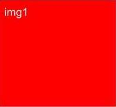
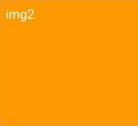
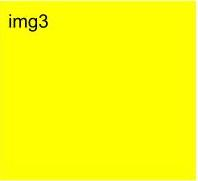
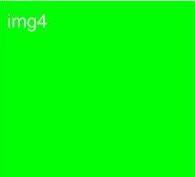
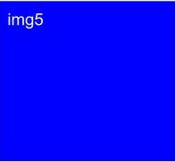

<html>
    <head>
        <title>Artwork Selection Experiment</title> <!-- to fill in later -->
        <script src="jspsych-6.2.0/jspsych.js"></script>
        <script src="jspsych-6.2.0/plugins/jspsych-html-keyboard-response.js"> </script>
        <script src="jspsych-6.2.0/plugins/jspsych-image-keyboard-response.js"></script>
        <script src="jspsych-6.2.0/plugins/jspsych-image-button-response.js"></script>
        <script src="jspsych-6.2.0/plugins/jspsych-html-button-response.js"></script>
        <link href="jspsych-6.2.0/css/jspsych.css" rel="stylesheet" type="text/css">
    </head>
    <body></body>
    <script>
        /* create timeline for experiment */ 
        let timeline = []; 

        /* define welcome message as a trial */
        let welcome = {
            type: "html-keyboard-response",
            stimulus: "Welcome to the experiment. Press any key to begin."
        }; 
        timeline.push(welcome); 

        /* first step: art display */ 
            /* NOTE: jsPsych does define an image-button-response plugin, but this 
            seemed to be the easiest way to custom-display multiple images at once. */  
        let multiArtDisplay = {
            type: "html-button-response",
            stimulus: "<div></img> </div>" + 
            "<div></img> </div>" + 
            "<div></img> </div>" + 
            "<div></img> </div>" + 
            "<div></img> </div>",
            prompt: "Please select what you think is the <strong> highest-value </strong> artwork.",
            choices: [1, 2, 3, 4, 5], 
            data: {correct: 1}
        };
        timeline.push(multiArtDisplay);

        function getArtWorkSelected() { 
            /* jsPsych.data returns a DataCollection object. Using .select('button_pressed') gives you a 
            DataColumn object. Using .values gives you an array of all values for button_pressed. 
            In this case, there is only one button_pressed and therefore we use [0] to grab that. */
            let offByOne = jsPsych.data.getLastTrialData().select('button_pressed').values[0]; 
            // button_pressed stores the first button as 0; I started labeling at 1. This does conversion.
            return offByOne + 1; 
        }; 

        function isAnswerCorrect() { 
            let artSelected = getArtWorkSelected(); 
            let correctAnswer = jsPsych.data.getLastTrialData().select('correct').values[0];
            return (artSelected === correctAnswer); 
        }

        let displayResults = { 
            type: "html-button-response",
            stimulus: function () { 
                let response = "Your choice was button number " + getArtWorkSelected() + ". \n"; 
                if (isAnswerCorrect()) 
                    return response + "Your answer is correct."; 
                else 
                    return response + "Your answer is incorrect."; 
            }, 
            choices: ["Continue"]
        }
        timeline.push(displayResults);

        /* End of experiment page as trial */ 
        let goodbye = { 
            type: "html-keyboard-response", 
            stimulus: "Thanks for participating. The experiment is over. You can close the browser window.",
            choices: jsPsych.NO_KEYS, 
            trial_duration: 2000 // Remove this when not debugging (need this line for displayData())
        };
        timeline.push(goodbye);  

        /* start the experiment */ 
        jsPsych.init({
            timeline: timeline, 
            on_finish: function () {
                // For debugging purposes:  
                console.log("started"); 
                jsPsych.data.displayData();
                // console.log(jsPsych.data.getLastTimelineData().select('button_pressed').values[0]);
            }
        }); 
        
    </script>
</html>